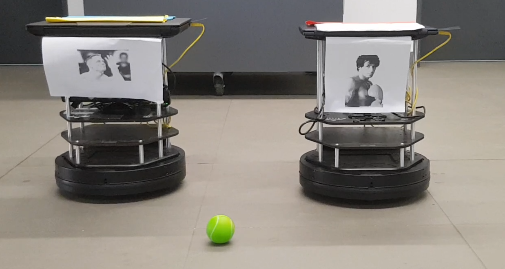
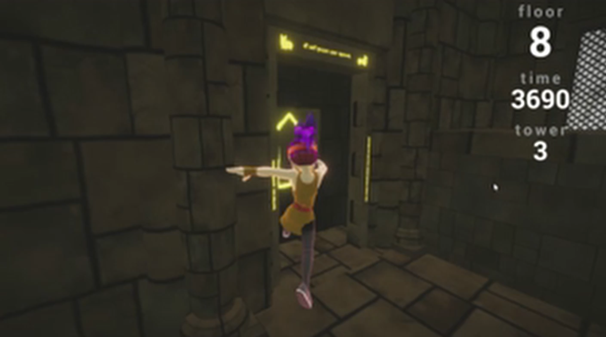
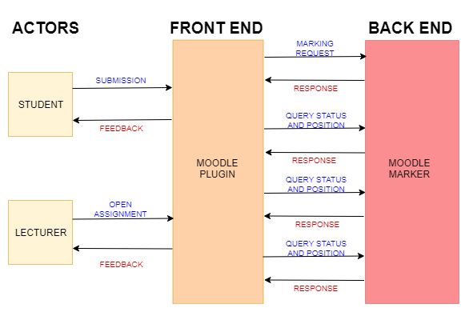

Other than work directly related to my research, I have also worked on the following projects.
| Wrobot |
|---|
| Tamlin Love, Rylan Perumal and Jia Hao Huo |
|  |
In this project, two turtlebots compete for possession of a ball, with one robot aiming to reach the ball and the other aiming to block its opponent. The project consists of an overhead webcam which feeds a video to the master computer, which performs some colour matching to determine the locations of the robots and the ball, uses PRM to plot a path to the goal, a PID controller to turn and move to the goal, and a networking script to remotely connect to the turtlebot from the master computer. |
| 2019 |
| Code · A Very Silly Video |
| Obstacle Tower |
|---|
| Tamlin Love, Jia Hao Huo, Rylan Perumal and Sarah Keartland |
|  |
In this project we implemented a Double DQN with Experience Replay approach to solve the Unity Obstacle Tower environment. |
| 2019 |
| Code · Another Silly Video |
| Wits Moodle Marker Extension |
|---|
| Tamlin Love, Jia Hao Huo, Rylan Perumal, Sarah Keartland, Tasneem Abed and Zachary Bowditch |
|  |
This project extended the existing Wits Moodle marker plugin to incorporate real-time feedback, multiple marking servers and more support for Matlab. This facilitated the automatic marking of Matlab scripts. |
| 2018 |
| Code |